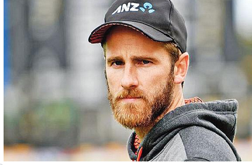

| News-portal360 |
|---|
৩০ এপ্রিল,২০২০
মুন্সিগঞ্জ থেকে ঢাকাগামী এমএল মর্নিং বার্ড নামের লঞ্চটি অর্ধশতাধিক যাত্রী নিয়ে ঢাকার সদরঘাটের দিকে আসার সময় গতকাল সকাল সাড়ে নয়টার দিকে ময়ূর-২ নামের আরেকটি লঞ্চ ধাক্কা দেয়। এতে যাত্রীসহ লঞ্চটি পানিতে ডুবে যায়। পরে বিভিন্ন বাহিনীর ডুবুরিরা যাত্রীদের মরদেহ উদ্ধার করে। দুপুর ১২টায় সদরঘাট–সংলগ্ন ফরাশগঞ্জ ঘাট এলাকায়। ছবি: দীপু মালাকার
মালাকারকাল ভয়ংকর এক দুর্ঘটনা থমকে দিয়েছে দেশকে। সোমবার সকালে সদরঘাটের কাছে ফরাশগঞ্জ ঘাট এলাকায় আরেক লঞ্চের ধাক্কায় অর্ধশতাধিক যাত্রী মর্নিং বার্ড নামের এক লঞ্চ ডুবে যায়। এখন পর্যন্ত ৩০ জনের লাশ উদ্ধার করা হয়েছে। ভয়াবহ এই বিপর্যয় আর অনাহূত মৃত্যুতে হতবাক সাকিব আল হাসান। গতকাল রাতেই এ নিয়ে সামাজিক যোগাযোগ মাধ্যম ফেসবুকে স্ট্যাটাস দিয়েছেন সাকিব। করোনাভাইরাসের প্রকোপে বিশ্বে মৃত্যুর মিছিল লেগেছে। বাংলাদেশেও দিন দিন সংক্রমণের সংখ্যা বাড়ছে। এমন এক ক্রান্তিকালে এমন দুর্ঘটনা ভাবাচ্ছে সাকিবকে। এমন ঘটনায় নিজেকে কোনোভাবেই সান্ত্বনা দিতে পারছেন না সাবেক বিশ্ব সেরা অলরাউন্ডার, 'প্রতিটি শোক সংবাদ হতাশার, বেদনার। গত চারমাস ধরে করোনায় আক্রান্ত হয়ে প্রতিদিনই মানুষ চলে যাচ্ছে না ফেরার দেশে। এর মধ্যে আজ আবার বুড়িগঙ্গা নদীর তীরে লঞ্চ ডুবে এখন পর্যন্ত ৩২ জন মানুষের প্রাণহানী এবং এখন পর্যন্ত বেশ কিছু যাত্রী নিঁখোজ রয়েছে। তাদের স্বজনদের আহাজারিতে ভারী হয়ে উঠছে চারপাশ। সত্যি বলতে আমি কোনো ভাবেই নিজেকে সান্ত্বনা দিতে পারছি না।
আরো দেখতে...অধিনায়কত্ব-হারিয়েছিলেন-কেন-আজও-জানেন-না-গাভাস্কার….
সৌরভ-শচীনকে-টি–টোয়েন্টি-বিশ্বকাপ-খেলতে-দেননি....

আরো দেখুন
| নেগেটিভদের নিয়ে ইংল্যান্ডের পথে পাকিস্তান |
| সচীনের ছেলের স্বজনপ্রীতি |
|  |
|---|
কেন উইলিয়ামসন বললেন বাংলাদেশের করোনা পরিস্থিতি নিয়ে। ফাইল ছবিকরোনাভাইরাসের বিরুদ্ধে লড়াইয়ে হাতে গোনা যে কটি দেশ সাফল্যের দেখা পেয়েছে, নিউজিল্যান্ড তার একটি। কিউইরা করোনামুক্ত হলেও অন্য অনেক দেশের পরিস্থিতি মোটেও ভালো নয়। সে কারণেই আগস্টে দুই টেস্ট খেলতে নিউজিল্যান্ড দলের বাংলাদেশ সফরটা স্থগিত করা হয়েছে। বাংলাদেশের করোনা পরিস্থিতি অবশ্য তামিম ইকবালের কাছে আগেই জেনেছিলেন কিউই অধিনায়ক কেন উইলিয়ামসন। করোনাভাইরাস মোকাবিলায় সচেতনতা বৃদ্ধিতে ইউনিসেফের সঙ্গে কাজ করছেন উইলিয়ামসন। ইউনিসেফের সঙ্গে নতুন জুটি বাঁধার পর নিউজিল্যান্ড অধিনায়ক কথা বলেছেন সংবাদমাধ্যমের সামনে। সেখানেই তিনি বলেছেন বাংলাদেশ–প্রসঙ্গে। বাংলাদেশ–পরিস্থিতি বলার আগে নিজের দেশের করোনা–সাফল্য নিয়ে বলেছেন নিউজিল্যান্ড অধিনায়ক, 'করোনা মোকাবিলায় নিউজিল্যান্ডে সবাই যেভাবে কাজ করেছে এটা দেখে ভালো লেগেছে। নিউজিল্যান্ডে হয়তো সাফল্য মিলেছে। কিন্তু বাইরে যদি দেখেন, অনেক দেশে এখনো ভাইরাসের বিপর্যস্ত। যেখানে সাবান–পানির মতো মৌলিক জিনিসের অভাব আছে।' উইলিয়ামসন যে দেশগুলোর কথা বলছেন বাংলাদেশ তার একটি। এই অতিমারির মধ্যে দেশের বাইরে অনেক ক্রিকেটারের সঙ্গে যোগাযোগ রাখছেন উইলিয়ামসন। সেটির অংশ হিসেবে গত মাসে তামিমের সঙ্গে অনলাইন আড্ডা দিয়েছিলেন। বাংলাদেশ ওয়ানডে অধিনায়কের কাছে জেনেছিলেন, বাংলাদেশ কতটা কঠিন পরিস্থিতির মধ্য দিয়ে যাচ্ছে। কিউই অধিনায়ক বললেন, 'কিছুদিন আগে জুমের মাধ্যমে বাংলাদেশের ওয়ানডে অধিনায়ক তামিম ইকবালের সঙ্গে দীর্ঘ আলাপ হয়েছে আমার। বুঝতে পেরেছি যে তাঁর দেশের পরিস্থিতি কতটা কঠিন। বাংলাদেশের মতো জনবহুল একটি দেশে যথাযথ স্বাস্থ্যবিধি মেনে ভাইরাসটি দূরে রাখা সত্যি কষ্টকর।' বাংলাদেশের আবহাওয়া সম্পর্কে অবশ্য আগে থেকেই ধারণা আছে উইলিয়ামসনের। ২০১৩ সালের অক্টোবরে বাংলাদেশ সফরে দুই টেস্টের সিরিজে খেলতে এসে তিনি বুঝেছিলেন, কন্ডিশনটা তাঁদের কাছে কতটা কঠিন, 'বাংলাদেশের কন্ডিশন অনেক কঠিন। যখন আমি প্রথম বাংলাদেশ সফরে গিয়েছিলাম (২০১৩ সালে) টেস্ট খেলতে, সে সময়কার গরম এবং আর্দ্রতার কথা ভুলব না,।' উইলিয়ামসনদের আবারও সুযোগ তৈরি হয়েছিল বাংলাদেশ সফরে আসার। করোনাধাক্কায় সেটি আর সম্ভব হলো না। গত সপ্তাহে সিরিজটি স্থগিত করার সিদ্ধান্ত নেয় বাংলাদেশ ক্রিকেট বোর্ড (বিসিবি)।
আরো দেখুন...
| সৌরভ কথা রাখতে পারেনি,,,, |
| আমাদের বয়স ও তো বাড়ছে,,,, |